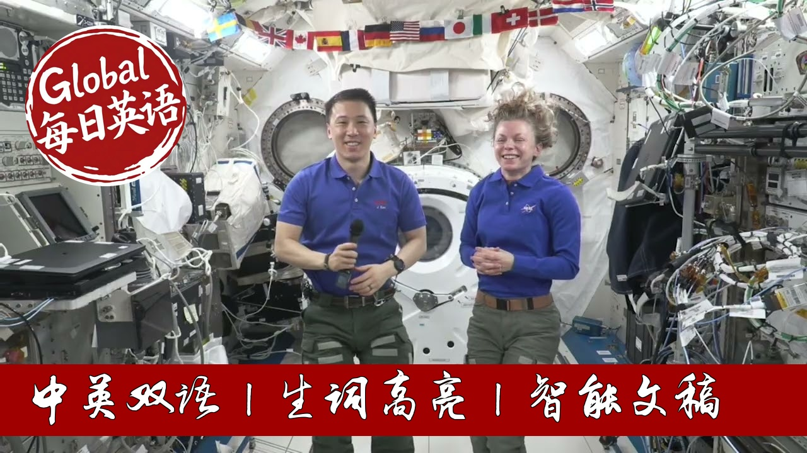

【NASA科普：NASA宇航员分享太空生活 20250916】
Summary: NASA astronauts aboard the International Space Station share their experiences adapting to microgravity and conducting groundbreaking research. They describe daily life, including two-hour exercise regimens to combat muscle atrophy and bone loss. The crew discusses ongoing scientific experiments focused on pharmaceutical development and human physiology. They also reflect on the challenges of space adaptation syndrome and the emotional significance of contributing to 25 years of continuous human presence in space. The dialogue highlights international collaboration and the future of long-duration missions to the Moon and Mars.
摘要： 国际空间站上的NASA宇航员分享了他们在微重力环境下的适应经历和突破性研究。他们描述了每日生活，包括为防止肌肉萎缩和骨质流失而进行的两小时健身训练。机组人员讨论了专注于药物开发和人体生理学的科学实验，并反思了空间适应综合症的挑战以及参与空间站25年持续载人飞行任务的意义。对话凸显了国际合作的重要性以及未来前往月球和火星长期任务的展望。

⏱️ Estimated Reading Time: 28 min.
📚 四级生词 📚 六级生词 📚 雅思生词 📚 托福生词 📚 专八生词 📚 SAT生词 📚 考研生词 📚 GRE生词
Station, this is Houston.
Are you ready for the event?
Houston, this is Station, we are ready.
David Salazar with the Fast Company Innovation Festival.
This is Mission Control, Houston.
Please give Station a call for a voice check.
Station, this is David Salazar.
How do you do?
We've got you loud and clear.
Great to have you with us.
I think you can hear me, but now I can hear you for some reason.
We've got you loud and clear.
Come check again from ISS.
Welcome aboard.
Amazing.
Good morning.
Thanks for being here.
I'm happy to be here.
Thank you.
The left is John Kim and on the right is Zeeland Carmen.
They are both ISS first time.
I would love to start with what's it been like being up there?
What was the first sort of adaptations you had to make?
Are you used to it at this point?
Yes, first of all, it's a dream come true to be here.
It takes years of preparation, a lot of teams of instructors and classmates teaching us and preparing us on the ground.
It's such an honor to finally be up here carrying out this mission that we spent so long dreaming about and preparing for.
It's been an extra special treat to be here with a classmate.
Johnny and I were hired at the same time.
It's really amazing to have a friend up here on this mission with me.
Johnny, you've been up there for quite a while right now, right?
Is there anything that you have done up there that's been really exciting or that you're are you bored of anything at this point after six months in space?
Board and now, you know, we do live in a pretty confined environment, but there's always there's always a beautiful view outside to watch and appreciate what we're looking at.
As far as some of the most fair things I've been able to do has been participating in a lot of the science experiments, science experiments, including our own bodies and helping ground researchers understand how our bodies change in response to microgravity.
But there have also been other experiments that have a lot more direct positive effects on people home at Earth and some of that is pharmaceuticals research.
Trying to see how we can potentially develop any manufactured drugs that might be more potent and helpful to people on Earth.
Yeah, we're here with Ken from Redwire.
He told us about the pillbox experiments.
We'd love to hear about some of your research work and things you've done that have been sort of in the realm of research and how your background informs that as well.
Yeah, we all come from different backgrounds.
For me, I actually do have a scientific background.
Johnny has a medical background in addition to his operational experience.
It's been so interesting getting to use this platform of the International Space Station as a unique laboratory for doing research and development for things that we can't do on Earth.
Of course, as astronauts, we're inherently interested in how do we make space flight safer, better, healthier, especially as we prepare to go farther afield and for longer durations.
So going to stay for a long time on the moon and eventually on to the surface of Mars, which are a thousand times farther away than the International Space Station is from Earth.
But here, because you can be weightless and just floating like this microphone here, you can grow really small crystals that would otherwise be affected by little things like touching the container that they're grown in or these larger scale messy buoyancy driven processes.
I used to be a geobiologist and so I am very familiar with these small-scale subtle processes like diffusion or like really small-scale kinetics and thermodynamics that are just messed up.
The signal is really hard to read when you've got advection, convection, moving around and changing the chemical signal.
So it's a great place to develop tiny crystals that are useful for researchers just from a purely scientific standpoint, but also for pharmaceutical development and growing really big or really pure crystals.
Can I ask about some of the other research that you're doing up there as well?
I mean, the Farmer and Dees very excited is what we've talked about a lot, but what are some of the other areas of work and research that you're doing every day?
So Zena talked a lot about how her past experiences and interests as a microbiologist and how so much of what we see today is in that field and she mentioned I have a medical background and some of the research that we're doing on our own human bodies is really, really interesting.
You know, something as simple as collecting saliva throughout one's long-terrace mission to see from an immunology perspective of how our bodies change in response to that.
Just last week I participated in a longitudinal study that involves many different countries around the world studying to see how our bodies change specifically for this experiment, how our basculature changes and how that might affect, say, our vision.
There is a syndrome called Space Associate Neuroachialist Syndrome, which we have a better understanding than we did in the past.
We don't quite fully understand it, but a lot of the research that we do here helps us understand how we develop it and how we might develop countermeasures against it, because if we certainly want to be successful as we go on very long-terrace missions to the moon and Mars, we have to make sure we completely understand what's going on and any kind of maladaptive features that happen in response to microgravity, we have a way to counteract it, just like we do for muscle atrophy and bone loss.
Can you tell us a bit about the sort of measures you take to prevent muscle atrophy and bone loss in space?
Yeah, one of the biggest most important things that we do is exercising every single day for two hours.
This includes a lot of cardio work, so we have basically a stationary bike.
It doesn't have a seat because we don't need it, but a stationary bike.
And then we also have a treadmill with a harness and bungees that keep us coming down to the treadmill.
When we're up here, weightless floating around our heart actually doesn't have to work very hard to pump and circulate the blood in our system.
And so that's a really important part of maintaining our heart health as well as strength.
We also have a really great machine.
It's a resistive exercise machine called A-RED and we can dial up basically hydraulic load and then operate it like you would a barbell, but it's got that resistance instead of putting weighted plates on the end of a barbell.
And that loading is really, really important for keeping
Our bone mass as well as our muscle mass.
A lot of the impacts that we experience as astronauts here are very similar to patients who are osteoporitic on the ground, aging populations, immunocompromised populations.
So it's important for us to keep up.
And then that also helps us study these processes and how we recover from them so that we can help those on home at home.
And I know it is both of your first time up there, so you haven't had the experience of going up going back to Earth yet.
What is sort of the anticipated reaction as a result of that besides, I guess maybe like dropping a lot of stuff because you expected to float.
Yeah, that's a funny thing you mentioned is getting used to microgravity.
It's so much easier to lose things.
I actually really appreciate gravity.
I think it'll be nice to set something down and know that it won't go anywhere if I turn my head.
But to answer your question, we have these organs inside of our ears, they're called the semicycolic canals, and they have a really special fluid in them.
And we have sensors that detect the movement of this fluid, and that helps us understand acceleration.
And specifically when it comes to gravity, it gives us a sense of where the floor is or what gravity is doing.
Space does not have that.
In a microgravity environment, our canals are very confused.
And so this mismatch of signals between what our organs are saying and what our brain is interpreting results in a really, really tough will for me.
It manifests itself in motion sickness.
And it only takes a few days to get over.
Our brain are incredibly adaptive and neuroplastic.
But what comes up must come down.
And so when we return to Earth for a lot of people, it really affects people in different ways.
It can also result in severe motion sickness.
And so we're going to keep ourselves hydrated.
There are some pharmaceutical medications we can take to help combat that.
But I'm sure this amazing adventure we've been on, it makes it all worth it.
Absolutely.
And once you are past the motion sickness of being in space and when you're not doing research or working out for two hours a day, where are some things that you do on station that keep you stimulated and not, I mean, it seems like it would be hard to be bored in space, but I'm sure it happens.
You are exactly right.
It's really hard to be bored here on the International Space Station.
We've got each other for company for one.
I think NASA does a really excellent job of selecting astronauts and our international partners do a great job of selecting astronauts and cosmonauts who are not only really technically proficient, but also great teammates.
And so that makes the adventure a lot of fun.
We play games with each other after dinner, after our last evening meeting.
And of course, there's always the view out the window that will never get old.
Okay, so this is a weird one.
I was talking to Ken Mariel before this about this.
I saw a tick-tock about a girl who does like scent stuff and she ordered the scent of space.
Can you tell us about what space smells like and why it's kind of weird?
So this is our first time here on the International Space Station.
Johnny was on board earlier when they did a spacewalk, the previous expedition.
So he might have smelled this smell.
I have not yet from what I hear.
It's a little bit like burnt toasts, a little bit like ozone.
Some of that is maybe the smell of space.
Some of that is maybe just off-gassing of volatiles that are in the metal of the space station itself.
Yeah, I think that's a really good description.
The closest thing I'd say is it's smelling burnt in metal.
It was like very metallic smell and very burnt.
And I think for the reasons you described maybe some volatiles coming off of the chemicals during the reprisharization.
Not entirely sure, but it was definitely a unique smell when you smelled for the first time ago.
I'm not going to forget that.
Awesome.
So I was going to mention this earlier, but you're both up there.
It's the 25th anniversary of continuous human presence in space.
For both of you, what does it feel like to be part of that legacy and helping drive innovation in space still, whether you're doing research on yourself or doing research on behalf of companies or NASA?
How do you feel about being part of the legacy of space and space exploration?
It's deeply humbling.
I think I speak for both of us when I say we wanted to be part of the NASA mission and human spaceflight specifically to be part of greater than an individual can do on our own.
Whether that's 25 years of astronauts living on the space station or more importantly, all of the teams across the entire globe is taken to make this space station possible.
It's just incredibly connecting, incredibly humbling to be part of that legacy.
All right.
Do you have any questions?
Yes, question?
Yeah, we have a question from Ariel.
Hi, Johnny.
I just want to say it's great to see you again.
We did a panel together in Boston ages ago.
Congratulations on both of you to both of you for your spaceflight mission.
Which module are you in and can you tell the audience a little bit about the physical structure of how the station works and where you guys are particularly right now?
Hi, Ariel.
I actually remember that Boston visit.
I love Boston, so any chance I can visit is always a good one.
We're in the Japanese module.
We call it the Gem, Japanese Experimental Module.
It's one of the biggest modules we have on the space station.
As far as its location, if you think about the space station, it's the most forward with respect to the direction we're moving and port.
So forward and port.
This thing right here is a small airlock.
Now it's not human rated, so you know, put anything live in there.
But it's a great platform for getting small CubeSats into space.
And actually, Kimi-san, who is one of the Japanese astronauts in our crewmate that's on board, has been working on this and has set to shoot out some CubeSats later this week.
And actually, we also have windows here.
Zina, what are you mind opening that?
Zina is going to go ahead and open one of those windows.
I don't know.
We're in orbital night, so you won't be able to see much.
If we were an orbital day, you could probably see some of the sunlight coming through.
But Zina's just opened it.
And if it were daylight, we'd be, oh, there's the moon.
That's super cool.
If she were, if it was a little bit more daylight, you'd be able to see the truss, the solar rays, and it's just so beautiful.
Thank you.
That's amazing.
Thanks.
And you mentioned some other astronauts and cosmonauts up there.
How many people are up there right now?
And how much interaction do you have with them?
There are seven people on board the International Space Station right now, and we have a lot of interaction with each other every day.
Some of that is just by the nature of the work that we're
Doing.
A lot of tasks take two people or multiple people.
We have a cargo ship coming up tomorrow that's going to bring a lot of experiments, a lot of resources consumables for us.
Johnny's actually going to capture that with the robotic arm on the space station, but then every person on the space station is involved in getting the cargo off of that vehicle and getting it stowed.
Stowed is just one of the most interesting challenges that we have on a space station like this.
And then some of it is just by choice.
We have meals together, maybe on a Saturday, we'll watch a movie together, play games together.
It's a really awesome part of this long duration mission.
Was it very clicky Zina when you got up there and the people who'd been there for a while were sort of testing you out as a newbie?
I would say clicky is not the right word for it.
Of course you have a bond with the crew that you've been on orbit with, but everyone is incredibly welcoming and we're all in an office together on earth.
We've trained together throughout the years.
We know each other really well, but every single expedition is different because you have a different combination of people.
And so although Johnny was here for six months whereas I'm still new, it's just really, really fun to be part of this mission together and be our Expedition 73 Part 2 crewmates.
But I think I did a good job of proving that I was a rookie all on my own.
Amazing and we've got like one minute left so I'm going to give you a very easy one I think and just this is so dumb.
I'm sorry.
What's your favorite space movie?
We actually watched it here for our first movie night with the current crew on board.
My favorite space movie is actually not very space the met, it's a space theme but it's not really about space and it's actually it's got to go and I think because it tells the just that endominal human spirit there's no genetics for that and so I think to me that's a metaphor that's very powerful in all of our lives.
What about you, Z?
Oh it's hard to choose and Gadica is really special.
I love watching that.
I think my favorites include Arrival and maybe aliens.
Awesome we have worked I think out of time Capcom Houston is that what's happening?
All right well thank you thank you so much for being here we really appreciate it the audience love this and give them a round of applause.
Thank you all so much this was really a lot of fun we loved speaking with you thanks for the great questions great conversation over and out from the International Space Station.
Wow.
Station this is Houston ACR.
Thank you that concludes our event.
Thank you to all participants.
Station we are now resuming operational audio communications.